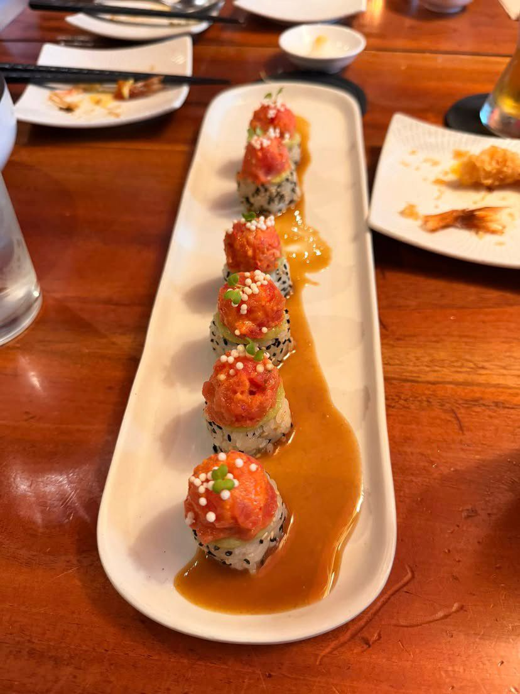
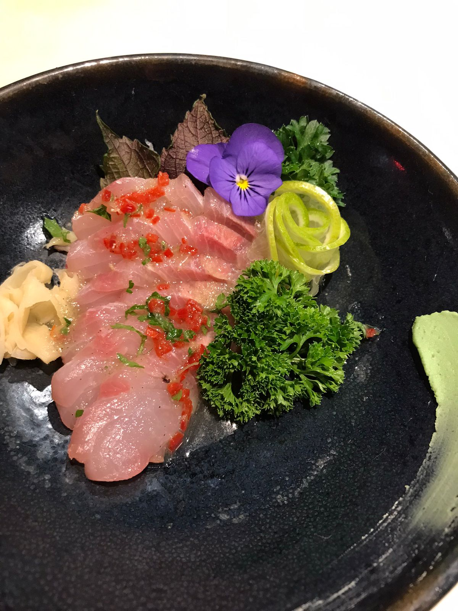
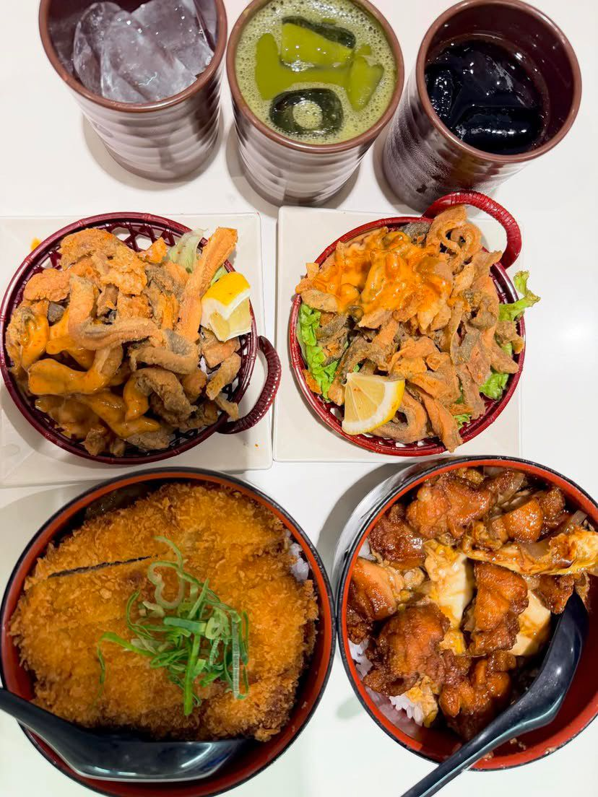

No dia a dia de balcão
Da seleção do peixe
Da seleção do peixe
ao prato final.




A Barô Shinkai nasce da experiência prática e da vivência gastronômica adquirida no Japão, com referências de Tokyo, Osaka e Kyoto — conectando a prática do balcão à lógica mais ampla da culinária tradicional japonesa.
A proposta não é ensinar apenas receitas: é ensinar o aluno a compreender o ingrediente, tomar decisões culinárias e construir um prato japonês com propósito — do corte ao prato final.
“Não quero ensinar você apenas a reproduzir receitas japonesas. Quero ensinar você a entender a lógica por trás delas.”


Vivência com referências de Tokyo, Osaka e Kyoto — precisão, produto e sazonalidade.
Do corte ao serviço, cada etapa é ensinada com raciocínio, não apenas repetição.
O ingrediente no seu melhor momento guia cada decisão do cardápio.